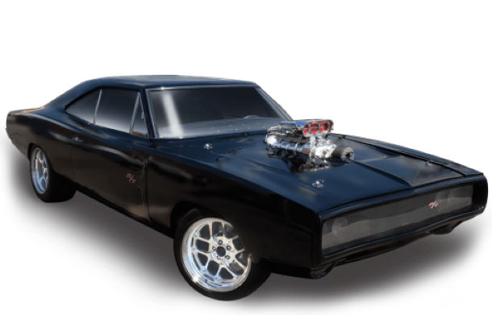
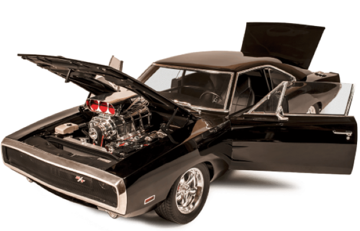

DODGE CHARGER


Em 1966 a Chrysler lançava o Dodge Charger para brigar com seus concorrentes Pontiac GTO,
Ford Mustang e Chevrolet Chevelle que já dominavam o
mercado americano com seus potentes motores V8.
O novo Dodge exibia um visual inovador e agressivo, com os faróis embutidos em uma grade e
uma bela carroceria com curvas que denunciavam sua vocação esportiva.
Isso tudo sem esquecer a potente mecânica,
pois os motores disponibilizados pela Chrysler na época eram verdadeiras usinas de força.
Vários modelos eram oferecidos, desde pequeno 318 V8 de 5,2 litros com 230cv até o grande
e lendário 426 V8 Hemi de 7,0 litros, que tinha dois carburadores de corpo quádruplo (quadrijets)
e cabeçotes de alumínio com câmaras de combustão hemisféricas, a origem da fama do Hemi.
Este motor foi adaptado das pistas de corrida para as ruas,
tendo alguns ajustes para ficar mais manso.
O 426 tinha potência de 425 cv, torque de 67,7 m.kgf e levava o Charger de 0 a 96 km/h em
6,4 segundos. Ele vinha equipado com câmbio manual de quatro marchas ou automático de três,
as versões menos potentes eram vendidas com caixa manual de três velocidades.
Em todo Charger a suspensão traseira trazia uma mola semi-elítica adicional no lado
direito e a estrutura era monobloco, com chassi e carroceria integrados.
No ano de seu lançamento foram vendidas mais de 37.000 unidades. Além do desempenho, contribuíam
o preço, e a excelente garantia de cinco anos ou 50 mil milhas. Desse total apenas 468 unidades
tinham a motorização 426 Hemi, o que logo a tornou uma raridade.
Um novo motor derivado dos utilitários da Chrysler foi lançado logo depois do lançamento
Charger, ficou conhecido como 440 V8 Magnum de 7,2 litros e gerava 375cv e 66,3 m.kgf de torque.
O 426 Hemi continuava sendo oferecido mas, mesmo com menor potência, o Magnum se tornava o motor
mais cobiçado do modelo, devido ao alto custo do 426 e sua menor confiabilidade.
A primeira reestilização aconteceu em 1968 ganhando uma nova carroceria, com linha de cintura alta,
que conferia maior robustez, faróis escamoteáveis sob uma profunda grade negra, pára-choques mais
estreitos que se integravam ao pára-lamas, coluna traseira com ângulo reto, lanternas duplas e
redondas. Os vidros laterais traseiros eram triangulares, o que garantia a agressividade do novo
estilo.
Esta versão ficou reconhecida como um dos mais belos musclecars da década de 1960, e até os dias
de hoje ele é idolatrado e tratado como uma lenda da indústria norte americana. Em 1969 trazia itens
dos modelos de competição, como as grandes lanternas retangulares traseiras, a nova grade dianteira
com uma divisão central. Outra novidade era a série SE, que oferecia acabamento em madeira, bancos
esportivos mais baixos e rodas especiais. O pacote SE era oferecido tanto nos Chargers comuns
no R/T. Neste ano era oferecido o motor 440 Six Pack, de três carburadores duplos, que equipava
apenas o Dodge SuperBee e o Plymouth RoadRunner.
O ano de 1970 as maiores diferenças eram as opções do motor 318 no Charger 500 e do 440 V8 Six Pack
de 385 cv no Charger R/T. Este ganhava também um vinco lateral nas portas, a grade voltava a ser
completamente vazada, sem a coluna central, o pára-choque era fundido com o adorno da grade e capô
tinha tomadas de ar maiores.
No ano seguinte, o Charger passava pela segunda reformulação recebendo uma grade mais larga com
quatro faróis circulares expostos, faróis auxiliares retangulares e novo formato da coluna traseira,
que se prolongava até a traseira e acentuava o formato fastback. As linhas laterais eram substituídas
por um desenho mais arredondado e limpo, além das duplas entradas de ar nas portas. O resultado foi
desastroso, suas vendas caíram expressivamente deixando essa versão somente um ano no mercado.
O ano de agonia do Charger foi 1972, quando a marca encerrou as vendas do R/T e do SuperBee.
Era um sinal de que o fim dos musclecars estava chegando. Os fabricantes estavam reduzindo a
potencia de seus motores, e os carros perdiam muito em esportividade.
A partir deste ano o novos modelos de Charger perderam o brilho e o titulo de musclecars tornando-se
apenas carros de passeio, e alguns anos depois deixaram de ser fabricados voltando definitivamente
para linha de produção somente em 2005.